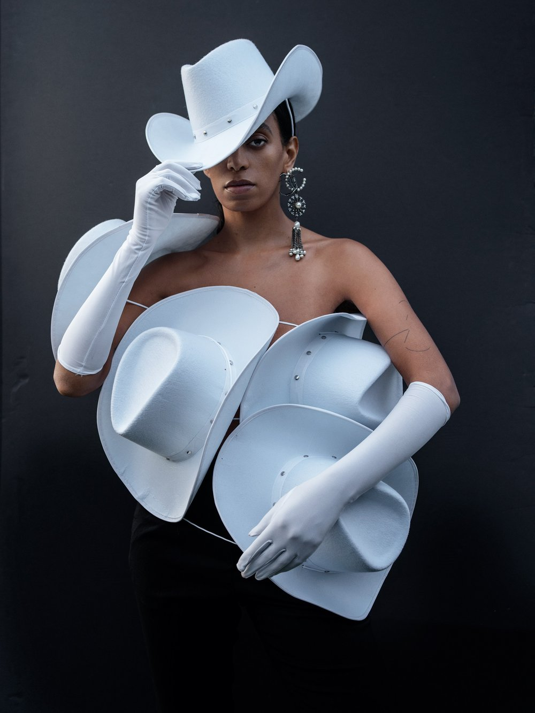
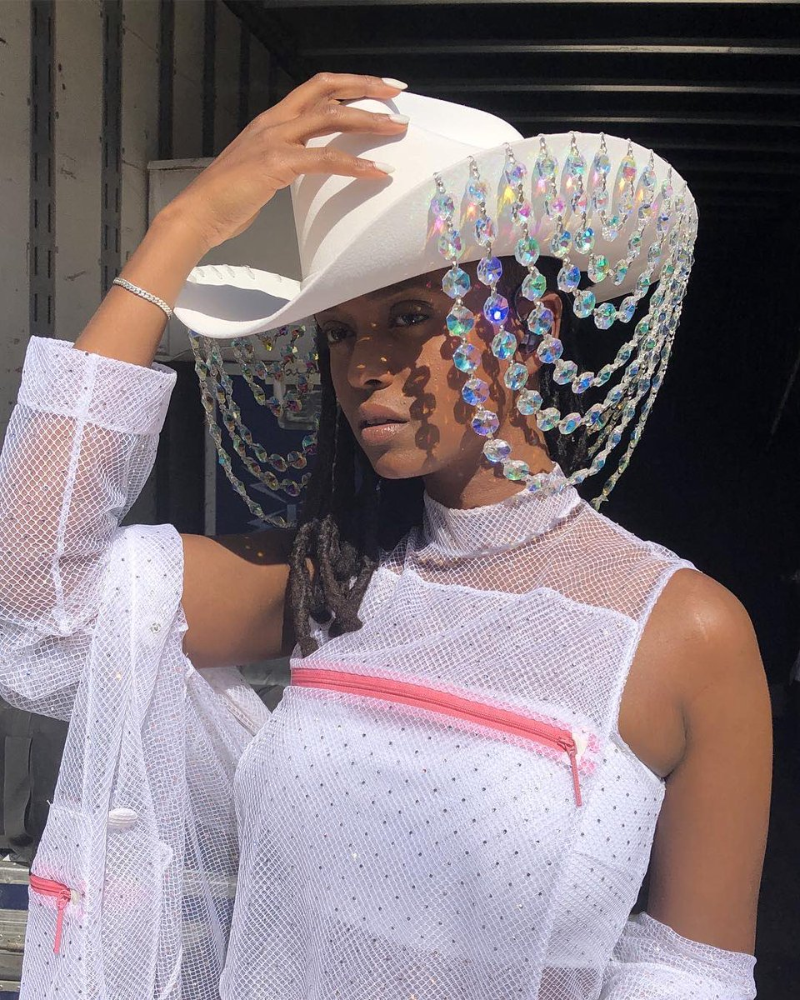
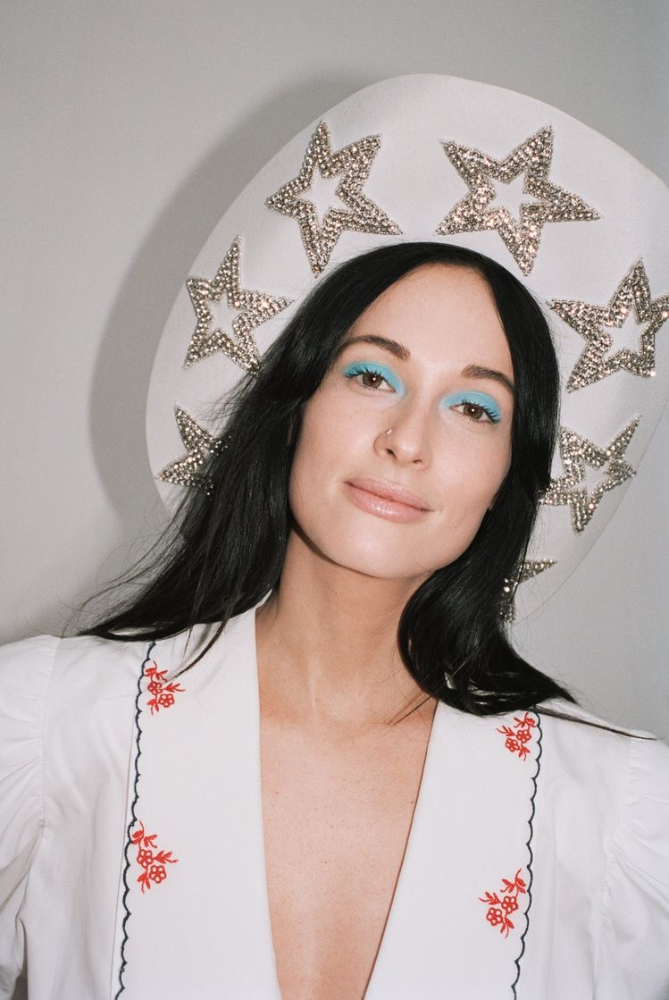
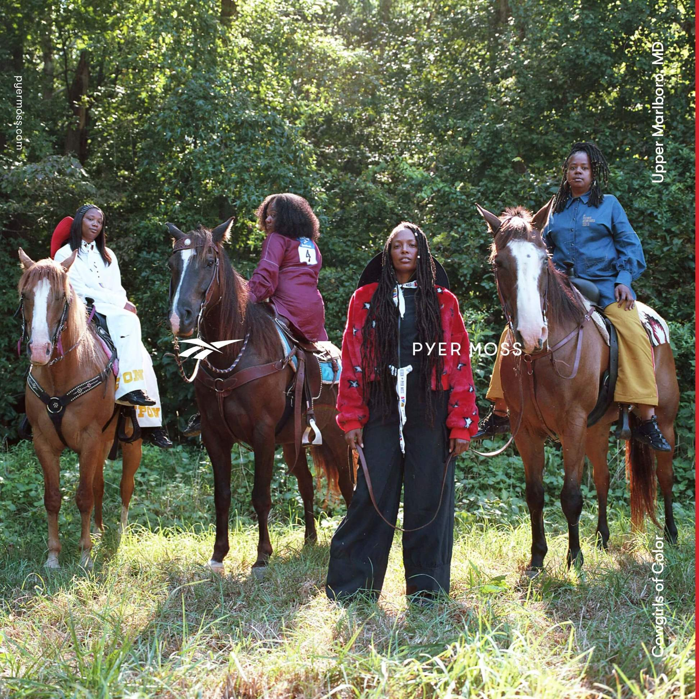
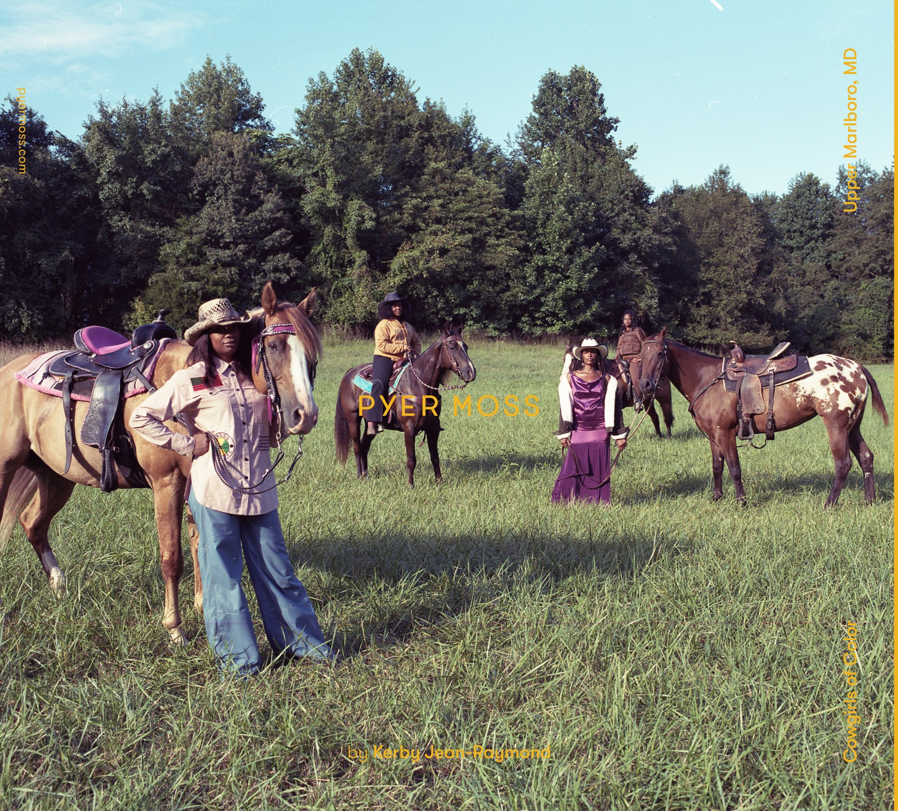
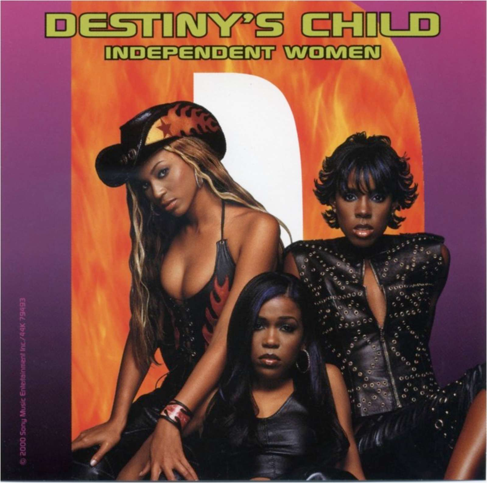
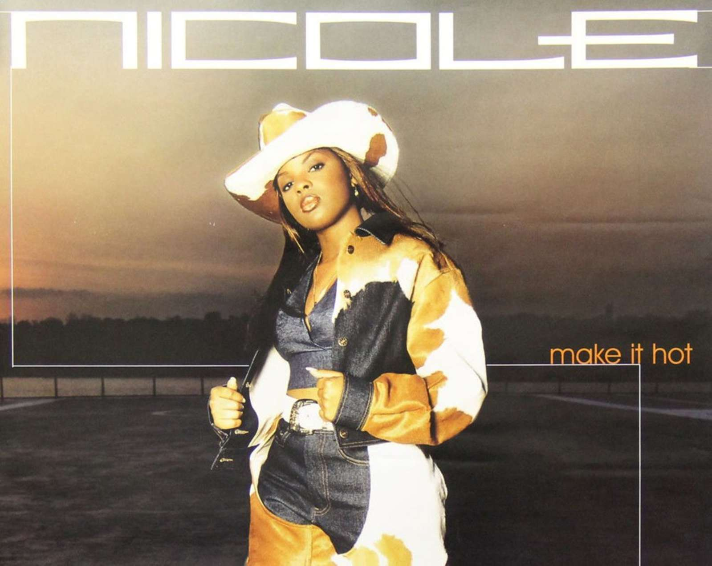

Fashion
The Pyer Moss Collection 1 campaign (2018) casted Cowgirls of Color and the Compton Cowboys. Telfar Clemens FW19 collection introduced the "norm core cowboy."


2000s R&B and Hip-Hop Nostalgia
Black cowboy dress had previously been a prominent trend. Mary J. Blige is credited as the pioneer while Nelly, Destiny's Child, and Lil' Kim were also known for their country-western styles.


The starting point for the contemporary yeehaw movement was the release of Beyonce's Lemonade, and her performance of "Daddy Lessons" at the Country Music Awards with the Dixie Chicks.
Other Significant Events
Solange using rodeo images in her releases highlighting Black cowboys and visuals that pay homage to her Houston hometown.Old Town Road becoming the longest running number one song in Billboard history, made viral by the TikTok #YeeHawChallenge.
Lil Nax X, Billy Porter, and Orville Peck dressed in iconic outfits with cowboy gear at the 62nd Annual Grammy Awards Red Carpet.